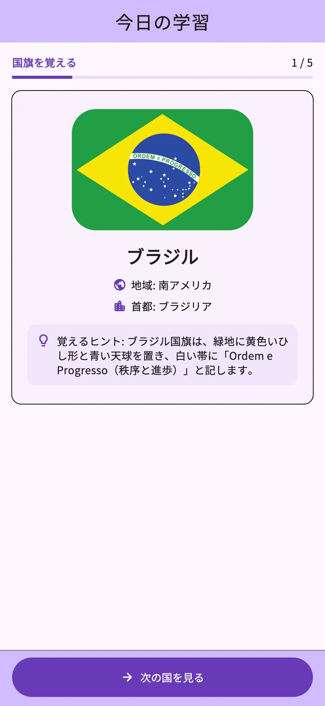
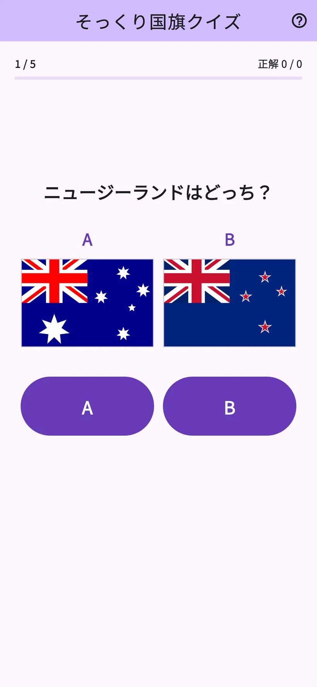
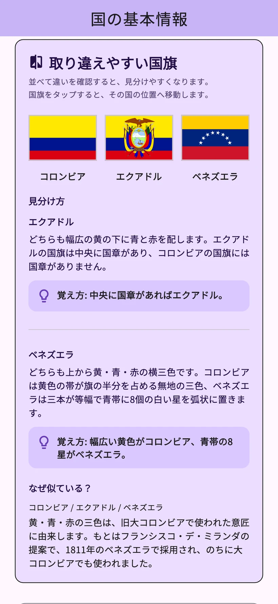
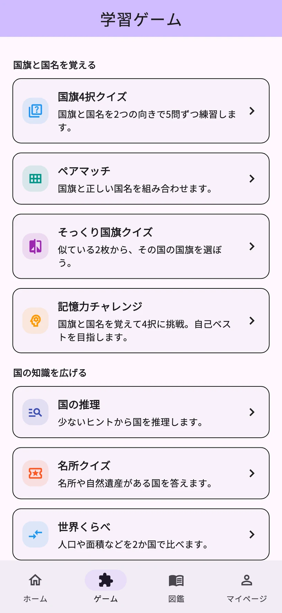

01
国旗4択クイズ
国旗から国名を選ぶ問題と国名から国旗を選ぶ問題があります。
国旗の暗記 あわあわポン
206の国・地域の国旗や首都を学べるアプリです。
毎日の学習と8種類のゲームで覚えた内容を確かめられます。
iPhone・Android / 無料ダウンロード・アプリ内課金あり


実際のアプリ画面
国旗と国名をひとつずつ学び、クイズで確認します。学習履歴に合わせた復習もできます。
記録画面はサンプルデータです。詳細な学習分析は学習プラスで利用できます。
色や模様の違いを比べて覚えられます。まずはフランスとイタリアの国旗で試してみてください。
国旗の見分け方を体験するWeb用の例題です。アプリとは表示が異なります。
国旗と国名の組み合わせから名所や隣接国まで、覚えたい内容に合わせて選べます。
国旗から国名を選ぶ問題と国名から国旗を選ぶ問題があります。
国旗と正しい国名を線でつなぎます。
似ている2枚から指定された国の国旗を選びます。
国旗と国名を覚えて4択問題に挑戦します。
順番に表示されるヒントから国を当てます。
名所や自然遺産がある国を答えます。
2つの国の人口や面積などを比べます。
指定された国と陸続きの国を選びます。


206の国・地域の国旗や首都、地図、歴史、文化を調べられます。似ている国旗の見分け方も解説しています。
利用者が出身の国・地域の文化やおすすめを紹介する投稿です。翻訳と運営の確認を経て公開され、対応言語で読めます。
国だよりのニックネームは任意。投稿の通報・非表示に対応しています。YouTube動画は外部で開きます。
毎日の学習に
対象の動画広告を視聴すると、選んだ項目の当日の利用枠が3件増えます。同じ国を当日中に開き直しても枠は消費しません。
回数制限なし・広告なし
自動更新の月額・年額プラン
月額プランには対象の方に1か月の無料体験があります。年額プランに無料体験はありません。
価格、無料体験の対象条件、体験終了後の料金、更新周期はアプリ内の購入画面でご確認ください。
アプリは日本語・英語・スペイン語・ドイツ語・韓国語・タイ語・インドネシア語・フランス語・ポルトガル語（ブラジル）・繁体字中国語（台湾）の10言語に対応しています。
今日の学習と通常の復習は無料です。国の詳細は1日3か国、ゲームタブのゲームは合計1日3回まで。対象の動画広告で、選んだ利用枠を当日3件追加できます。
月額プランには対象の方に1か月の無料体験があります。年額プランに無料体験はありません。料金や対象条件はアプリ内の購入画面でご確認ください。
ユーザー登録やサインインは不要です。国だよりの投稿やご意見もアプリから送れます。
学習記録は端末内に保存されます。別の端末への自動同期はありません。購入内容の復元と学習記録の移行は別の機能です。
国旗や地理に興味のある方が、自分のペースで学べます。広告、任意の購入、投稿機能、外部リンクがあります。小さなお子さまが使う場合は保護者と一緒にご確認ください。
投稿ルール・翻訳・公開への同意後に送信し、翻訳と運営の確認を経て公開します。ニックネームは任意で、自分の投稿の削除や、投稿の通報・非表示ができます。
毎日の学習と8種類のゲームをアプリで試せます。
iPhone・Android / 無料ダウンロード・アプリ内課金あり